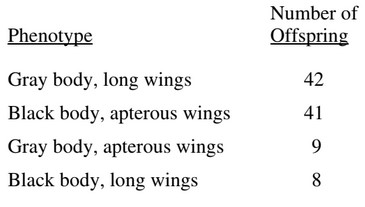

A student in a biology class crossed a male Drosophila melanogaster having a gray body and long wings with a
female D. melanogaster having a black body and apterous wings. The following distribution of traits was
observed in the offspring.

Which of the following is supported by the data?
Assuming that the two traits follow Mendel's laws, we should expect typical ratios. If the alleles were dominant or recessive, we expect a cross such as this:
$$ BbWw \times \underbrace{bbww}_{\text{recessive individual}} $$
Note that the following cross would not work, since all of the offspring would reflect the dominant allele:
$$ BBWW \times bbww \tag{Not possible}$$
The phenotypic ratio for the cross \(BbWw \times bbww\) is 1:1:1:1.
$$ \begin{array}{|c|c|c|c|c|} \hline
& BW & Bw & bW & bw \\ \hline
bw & BbWw & Bbww & bbWw & bbww \\ \hline
\end{array} $$
Since the data does not correspond with this ratio, independent assortment did not occur. We would also not be sure which alleles would be dominant since they occur at similar frequencies.
When the observed ratios do not fit the expected ratios, it is likely genetic linkage occured.
The two traits must have been located close to each other on the chromosome.